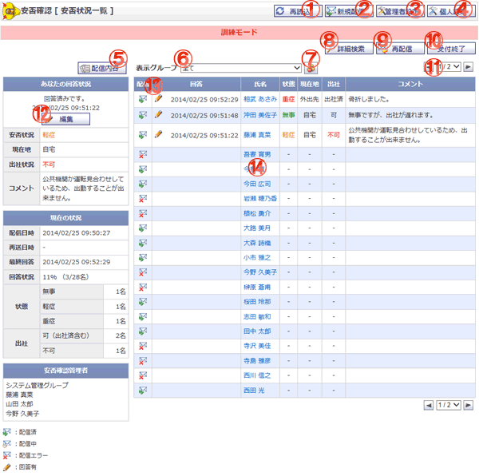

各ユーザの安否状況を確認する画面です。

機能説明
再読み込みボタン画面を再読み込みします。 |
新規配信ボタンメッセージ配信画面へ遷移します。 |
|---|---|
管理者設定ボタン管理者設定画面へ遷移します。 |
個人設定ボタン個人設定画面へ遷移します。 |
配信内容ボタンメッセージ配信内容確認画面へ遷移します。 |
表示グループコンボ登録されているグループ・マイグループ（橙色）の一覧が表示されます。このコンボで選択されたグループに所属するユーザの情報が安否状況一覧に表示されます。 |
表示グループボタンポップアップでグループ選択画面が開きます。 |
詳細検索ボタン詳細検索項目が表示されます。 |
再送信ボタン安否確認の再送信を行うため、メッセージ配信確認画面へ遷移します。 |
受付終了ボタン安否確認の受付を終了し、完了画面に遷移します。 |
ページングコンボ・前頁・次頁ページングコンボで任意のページへ、前頁アイコンクリックで前のページへ、次頁アイコンクリックで次のページへそれぞれ遷移します。 |
回答ボタン安否状況登録画面へ遷移します。 |
ヘッダタイトルクリックによって一覧のソート条件の切り替えを行います。現在ソート条件になっている項目をもう1度クリックすると「昇順」「降順」が切り替わります。 |
氏名リンク氏名リンクをクリックすると、安否状況編集画面へ遷移します。 |
表示・入力項目説明
あなたの回答状況
あなたの回答時間、回答内容を表示します。
現在の状況
現在の安否確認状況を表示します。
安否確認管理者
管理者設定で設定した安否確認管理者一覧を表示します。
配信
配信状況を表示します。配信済()、配信エラー()を表示します。
回答
回答日時を表示します。
氏名
氏名を表示します。
状態
状態（無事、軽症、重症）を表示します。
現在地
現在地（自宅、会社、外出先）を表示します。
出社状況
出社状況（不可、可、出社済）を表示します。
コメント
安否状況についてのコメントを表示します。